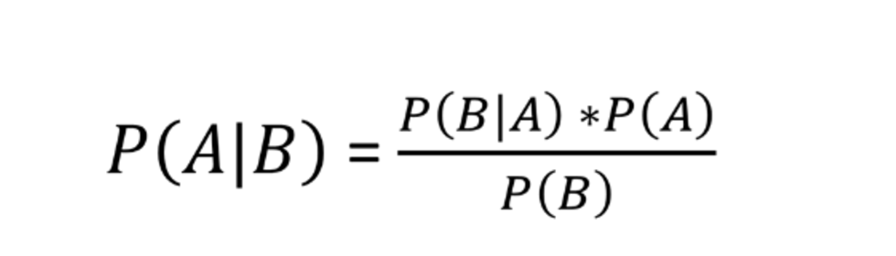

Thomas Bayes was an English statistician, philosopher and Presbyterian minister known for having formulated a specific case of the theorem that bears his name: Bayes' theorem. Bayesian probability is the name given to several related interpretations of probability as an amount of epistemic confidence – the strength of beliefs, hypotheses etc., – rather than a frequency. This allows the application of probability to all sorts of propositions rather than just ones that come with a reference class. "Bayesian" has been used in this sense since about 1950. Since its rebirth in the 1950s, advancements in computing technology have allowed scientists from many disciplines to pair traditional Bayesian statistics with random walk techniques.
Bayes theorem is described as follows:

where both A and B are events or conditions. An estimation of the probability
A occurs given some knowledge B can be updated as B changes, often allowing
more information to lead to better prediction.
One author, Nate Silver, who's an excellent statistician in his own right had this to say about Bayesian statistics:
“Under Bayes' theorem, no theory is perfect. Rather, it is a work in progress, always subject to further refinement and testing.”
― Nate Silver